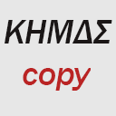
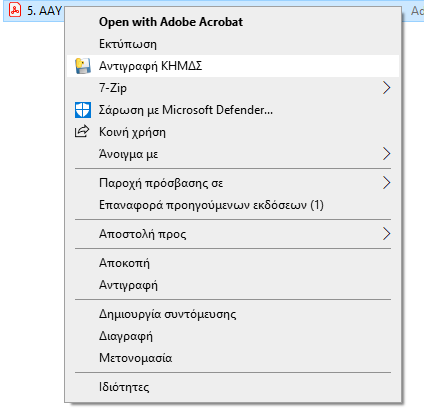

KHMDS Extractor
Τέλος στην πληκτρολόγηση κωδικών.
Αντιγραφή ΑΔΑΜ, Σύμβασης & Πληρωμής με ένα δεξί κλικ.
Πώς λειτουργεί;
- Ακρίβεια Raw Stream: Διαβάζει απευθείας τον κώδικα του PDF. Βρίσκει το ID ακόμα κι αν το κείμενο φαίνεται "κινέζικα" (mojibake).
- Ενσωμάτωση στο Context Menu: Απλά κάντε Δεξί Κλικ → Copy KHMDS ID πάνω στο αρχείο.
- Native Ειδοποιήσεις: Εμφανίζει επιβεβαίωση (Toast Notification) και αντιγράφει αυτόματα στο πρόχειρο.
- Χωρίς Διαδικασίες IT: Εγκατάσταση χωρίς δικαιώματα διαχειριστή (No-Admin needed).

Ο κώδικας είναι ανοικτός και διαθέσιμος στο GitHub Repository.